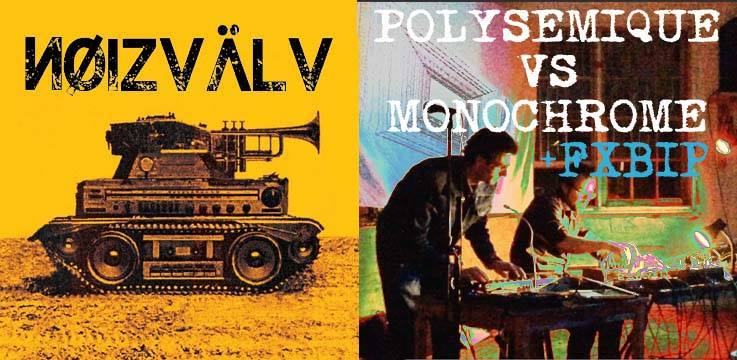
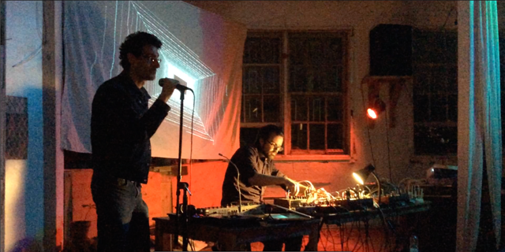

CHARLES-ALEXANDRE GRÉGOIRE & SYLVAIN AUBÉ
« Miroitant » est une collaboration entre Charles-Alexandre Grégoire et Sylvain Aubé.
Alliant spoken word et modulaire, cet album combine les mots, improvisés ou écrits de Charles-Alexandre ainsi que les nappes sonores de Sylvain Aubé. Charles-Alexandre y ajoute également du synthétiseur ainsi que des bruits concrets.
Leur premier album réalisé il y a 15 ans, « Polychrome », est aujourd'hui introuvable.
« Miroitant » is a collaboration between Charles-Alexandre Grégoire & Sylvain Aubé.
Blending spoken word and modular synth, this album combines the improvised poetry of Charles-Alexandre with Sylvain Aubé's synthetic drones. Charles-Alexandre is also contributing extra synth as well as his trademark concrete sounds.
Their first collaboration, « Polychrome », which was produced 15 years ago, is now impossible to find.

#2) September 15, 2017 - Cassette Launch,
as part of improv music nights @ 106U
#1) June 3, 2017 @ La Plante, GRICHE label launch
with Rodrigo Velasco, Stephanie Castonguay, Emilie Mouchous, Geert-Jan & Crystalgriche

Instrumentale
Fragments épisodiques
Mouvement métamorphose malléable
Les paramètres expérimentaux qui permettent ...
de l'ensemble de la personne
Les forces créatives à l’oeuvre dans la personne
agissant dans la personne
en constante connaissance de son environnement
le mène dans un voyage dimensionnel
où les multiples rencontres
de perceptions diverses ...
Mille et un mondes visités
à travers les années de recherches perpétuelles des sens
qui permettrait l’émancipation complete de l’humanité
transcendant par la compréhension la souffrance existante
émulée relation épreuve résolue par la science
Mystérieuses manoeuvres de modulations
Dans l’existence même …
Transport d'informations
pulvérisées par des circuits internes
permettant de balader dans la voix lactée
tel un astronaute qui explore l'univers infini
dans lequel je rebondis tel un ballon projeté aléatoirement
par des vents ventriloques qui murmurent une pensée secrète
Mais quel son émis me propose de signifier mon existence
tel un pantin sur un pentagramme
par les ficelles aléatoires
une programmation
des cellules
Pourchassant
le soleil levant
Tel un aquarium
qui somnole en trombone
parcelles de lacs
qui murmurent
le cyclope
C'est une masquarade à travers laquelle il se …
…
tombé
se relève
faire face aux grimaces
les cauchemars les plus sombres
[Silence]
Dans les lieux de profondeurs abyssales
des milliers d’espèces encore inconnues
(spoken word solo)
Entrelacs kaléidoscopiques
de mouvements miroitants tel mille miroirs dans l'éternité
qui laissent scintiller tel la lune sur un lac
symbole d'une présence éphémère
malléable message mise sur l'interprétation
pratique d'entrelacs
rhizôme d'emboîtements
ou tel des boîtes à surprises
des concepts et des émotions
qui s'entrechoquent afin de dessiner
sur un sable liquide
le sens insaisissable
sublime
être/étant de salamandre
amandes grillées
sur une plage de son
ou encore et encore
à notre façon
nous exprimions la révolution/
ce qui devenait évolution
minutieuse pensée profonde
qui au coeur de l'océan sont tranquillement
dans leur processus de croissance
plongeur de connaissance éphémère.
Pourtant les répliques sont les mêmes
les mêmes mots mâchés
qui ont sculpté les monuments du temps
le temps tentaculaire.
Instrumentale